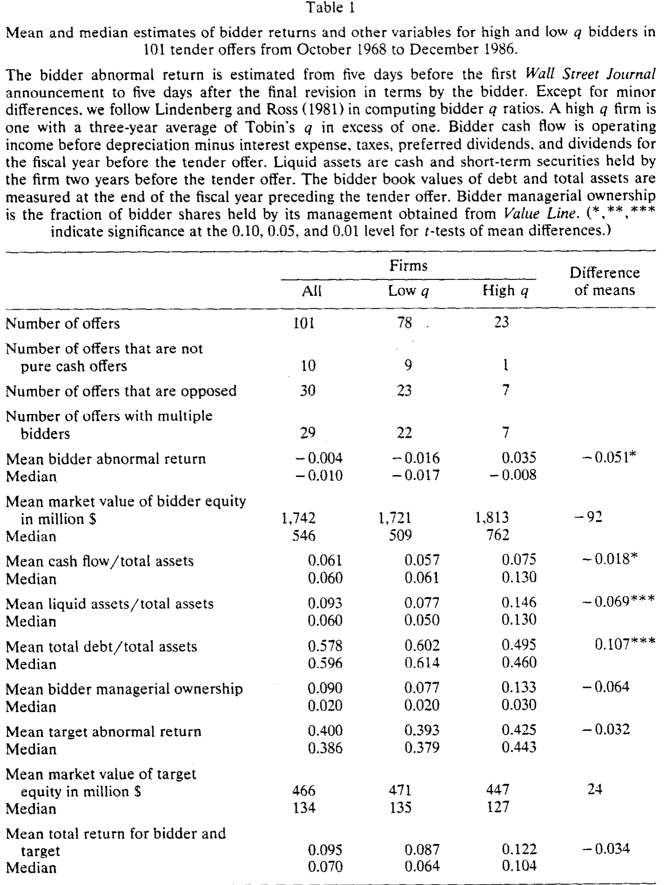
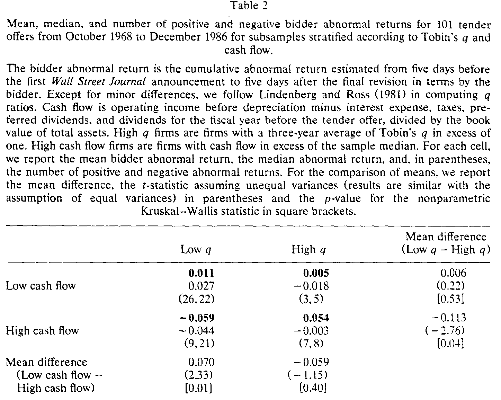
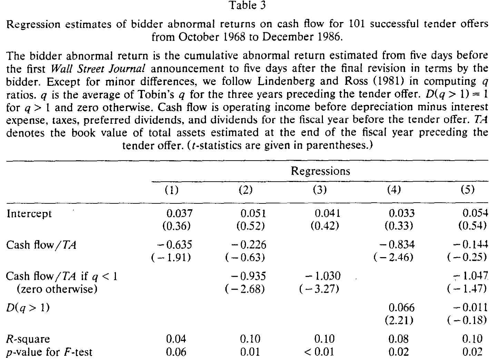
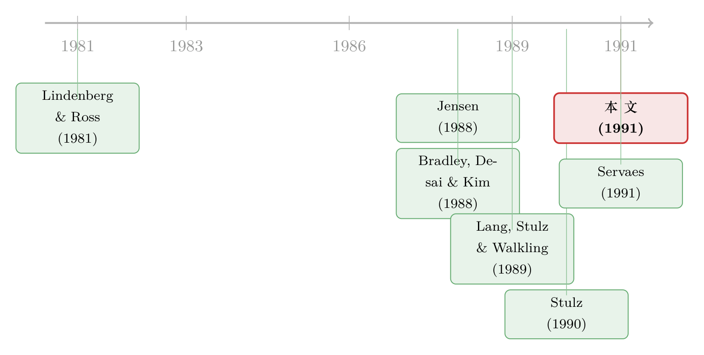

现金多的公司去并购，市场为什么先扣分？
本文读的是 Lang, Stulz & Walkling (1991, Journal of Financial Economics)：他们用 托宾 q (Tobin's q) 把竞买方分成「有好项目」和「没好项目」两类，发现对那些没有好项目（低 q）的公司，手里现金流越多，宣布收购时股价跌得越狠——现金流每多出总资产的 1%，并购带给股东的收益就少掉约普通股价值的 1%；而对有好项目（高 q）的公司，这种关系根本不存在。这是对 Jensen「自由现金流假说」第一个干净的横截面检验。
1 一个尴尬的事实，和一个更尴尬的猜测
先从一个让公司金融研究者长期不舒服的事实说起：当一家公司宣布要去收购另一家公司时，收购方（bidder）自己的股价，常常是跌的。
这件事到 1980 年代已经被反复记录。本文样本里，101 起成功的要约收购 (tender offer)，竟有 54.5% 的竞买方在宣布时遭遇了负的异常收益；全样本的平均异常收益是 -0.004，虽然不显著为负，但怎么看也不像是一笔「股东欢呼」的好买卖。
问题来了：如果收购平均而言不给收购方股东赚钱，公司的管理层为什么还要前仆后继地去并购？
这正是 Jensen (1988) 那个著名猜测要回答的。他提出的 自由现金流假说 (free cash flow hypothesis) 说得很直白：手里攥着大把现金、却又找不到好项目的经理人，宁愿把钱投到净现值为负 (negative NPV) 的项目里，也不肯把钱还给股东。为什么？因为管理层从「把公司做大」里获得的私人好处（地位、薪酬、帝国），即便项目本身亏钱，也照样存在。（关于 Jensen 这条线索的来龙去脉，可参见《现金为什么一定要「还」出去？——四十年后，重读 Jensen 的自由现金流》。）
听上去很有道理。可这个假说有个致命的麻烦：它几乎无法被证伪。任何一笔失败的收购，你都可以说「看，这就是自由现金流在作祟」；任何一笔成功的收购，你也可以说「这家公司本来就有好项目」。自由现金流是个看不见的东西——它定义为「投完所有正净现值项目之后还剩下的现金」，而「所有正净现值项目」恰恰是研究者观测不到的。
于是，一个自然的问题是：怎样才能把这个滑溜溜的假说，钉在一张可以检验的桌子上？
2 关键的一步：用 q 把公司劈成两半
本文最聪明的地方，不在数据，也不在计量，而在测量的设计。
作者意识到，自由现金流假说真正缺的那块拼图，是「这家公司到底有没有好项目」。而 托宾 q——公司资产的市场价值除以其重置成本——恰好可以替这块拼图站岗。
逻辑是这样的。把一家公司的价值看成「在用资产的价值 + 成长期权的价值」。如果一家公司的 q 小于 1，意味着它在用资产的市场价值低于重置成本；那么它不可能拥有有价值的成长期权——否则它只要扩张现有业务就能赚钱，q 自然会被推到 1 以上。所以：
q < 1 是「投资机会差」的一个充分条件。作者把这类公司称为 低 q 公司 (low q firms)，把 q 三年均值超过 1 的称为 高 q 公司 (high q firms)。
这一步把模糊的「有没有好项目」翻译成了一个可观测的数字。于是自由现金流假说立刻有了清晰的、可被数据反驳的预言：
- 对低 q 公司（没好项目）：现金流越多，越容易去做伤害股东的收购，所以宣布收购时的异常收益应当与现金流负相关。
- 对高 q 公司（有好项目）：它们本就该把内部资金用在刀刃上，收购对它们是正净现值项目，所以异常收益应当与现金流无关。
注意这个设计的精妙之处：它要的不是「现金流多的公司收购表现差」这种笼统结论，而是一个交互效应 (interaction)——现金流的负面作用，只应该出现在低 q 公司身上。这个「差异中的差异」远比单一相关性更难被别的故事解释掉。
作者也很诚实地承认 q 是把钝刀：我们观测到的是平均 q，而理论要的是边际 q；而且 q 本身就难测。但他们指出，这种测量误差会把一些「其实有好项目」的公司错划进低 q 组，从而让结果偏向于拒绝自由现金流假说——也就是说，误差是逆着他们想要的结论使劲的。能在这种不利偏误下还找到效应，反而更有说服力。
3 数据：101 起要约收购
样本来自两个数据库：罗切斯特 (Rochester) 的要约收购库（1968 年 10 月–1980 年 9 月）和 Austin Tenderbase（1980 年 9 月–1986 年）。入样要求很标准：收购方与目标方都在 CRSP 日收益数据上、收购方确实买到了股份、且发生在 1968 年 10 月之后。满足条件的有 209 起；再叠加现金流与 q 的数据要求后，最终样本缩到 101 起成功要约收购，其中 78 起为低 q、23 起为高 q。
- 观测单位：一起成功的要约收购。
- 异常收益：沿用 Bradley, Desai & Kim (1988) 的方法，市场模型参数在首次公告前
300到60天估计；对单一竞买方的未修订要约，累积异常收益取公告日前后共11天；多竞买方或有修订的，则从首次公告前 5 天算到最后一次修订后 5 天。 - 现金流：第一个度量沿用 Lehn & Poulsen (1989)——折旧前营业利润，减去利息、税、优先股股利和普通股股利，再除以总资产账面价值。
- q：用 Lindenberg & Ross (1981) 的算法，并按 Lang, Stulz & Walkling (1989) 做了微调。
这里有个值得停一下的小决定：为什么用总资产账面价值来标准化现金流，而不是用股权市值？作者给出了一个漂亮的理论理由：股权市值本身就等于未来现金流的现值，如果现金流服从随机游走，现金流增加根本不会改变「现金流/股权市值」这个比率——那样回归就退化成在拿异常收益对折现率做回归了。而「现金流/总资产账面值」则始终随现金流单调上升。这个细节体现了作者对「分母」的警觉。

Table 1
表 1 还顺手交代了一个为什么必须分 q 来看的关键事实：高 q 公司同时拥有更高的现金流（0.075 vs 0.057）和更高的异常收益（0.035 vs -0.016，差异 -0.051，在 10% 显著）。换句话说，如果你把高低 q 公司混在一起看「现金流 vs 收益」的关系，高 q 公司「现金流又高、收益又好」的特征，会正好掩盖低 q 公司那条「现金流越高、收益越差」的负向关系。不先分组，你什么都看不出来。
4 主要结果：低 q、高现金流，正是最差的那一格
接着，最直观的检验登场了。作者把样本切成 2×2 四格：q 高低 × 现金流高低（现金流以样本中位数为界）。自由现金流假说的预言非常具体——左下角那一格（低 q、高现金流）应该是收益最差的。
结果如表 2：

Table 2
低 q、高现金流这一格的平均异常收益是 -0.059（中位数 -0.044），30 家公司里 21 家是负收益。它显著低于低 q、低现金流格（0.011）和高 q、高现金流格（0.054）。在低 q 公司内部，低现金流减高现金流的收益差是 0.070，t 值 2.33，非参数 Kruskal-Wallis 检验的 p 值是 0.01；而在高 q 公司内部，同样的差是 -0.059 但 t 值仅 -1.15，p 值 0.40——不显著。
更关键的是方差分析给出的判决：高低现金流两组之间没有总体差异，高低 q 之间有 10% 水平的差异，而q 与现金流的交互效应在 0.02 水平上显著。这正是第 2 节那个「差异中的差异」预言被坐实。
然后是回归，把它做成连续变量、并控制其他东西（表 3）。所有回归都用 加权最小二乘 (weighted least squares)，权重是市场模型残差标准差的倒数：

Table 3
读这张表要抓三个数：
- 回归 (1)：全样本里，异常收益对现金流的系数是
-0.635（t =-1.91）。负相关，但只是边际显著。 - 回归 (3)：只放「低 q 公司的现金流」，系数
-1.030（t =-3.27）。这就是文章摘要里那句话的来源——低 q 公司的现金流每增加相当于总资产1%的量，收购给股东带来的收益就减少约普通股价值的1%。经济意义和统计意义同样可观。 - 回归 (4)–(5)：一旦把「高 q 哑变量」和「现金流」的交互放进来，单纯的高 q 哑变量就失去了边际解释力——因为现金流与高 q 哑变量的相关系数高达
-0.64。这恰恰说明：之前文献里发现的「高 q 公司收购表现好」，很大一部分其实是「这些公司现金流没那么泛滥」在起作用。
作者还做了稳健性：把现金流改用股权账面值、或股权加长期债账面值来标准化，结论不变，且用股权账面值时结果更强（t 值更大、R² 更高、F 检验 p 值更低）。
于是反转出现了：自由现金流这个曾经「无法证伪」的假说，被 q 这把尺子劈成两半之后，终于交出了一个具体、有方向、有量级、且经得起控制变量考验的横截面预言。
5 文献脉络
把这篇论文放回它的时代，能看得更清楚。
最早的两块基石彼此独立：一边是 Lindenberg & Ross (1981) 给出了估计 托宾 q 的可操作算法，让「投资机会」第一次有了量化的抓手；另一边是 Bradley, Desai & Kim (1988) 把要约收购里目标方与收购方收益的事件研究方法做成了标准件。

真正点燃这条线的是 Jensen (1988) 的自由现金流假说——一个极具影响力、却苦于无法直接检验的猜想。Stulz (1990) 随后给出了一个正式模型，刻画了该假说成立所需的条件。而本文的两位作者自己在 Lang, Stulz & Walkling (1989) 里已经发现：收购方收益对高 q 公司更高。本文（1991）正是站在这几块石头上，第一次把 q 和现金流交叉起来，给 Jensen 的假说做了一个干净的横截面检验。几乎同时，Servaes (1991) 也用 q 与代理成本的框架做了平行的工作，两者互相印证。
这条脉络此后延伸出一整片关于「并购是否毁损价值、价值从何而来」的文献（可对照《赚了 1.1%，却亏掉 3030 亿：并购里那个被「平均」藏起来的规模效应》与《并购到底有没有创造价值？别问股价，去翻它们的现金流账本》）。
6 评论与延伸（Q&A + 研究方向）
(a) 几个可能的疑问
Q：用平均 q 而不是边际 q，会不会让整套检验站不住脚？
这是最实在的担忧，作者也正面回应了。平均 q 是边际 q 的有偏代理，且会把一些「拥有老旧资产但仍有好项目」的公司错划进低 q 组。但关键在于偏误的方向：这类误判会把「有好项目」的公司塞进「没好项目」的组里，从而稀释、而非夸大那条负向关系。也就是说，测量误差是在替零假设说话——能在这种逆风下找到 t =
-3.27的效应，反而更可信。
Q：会不会是现金流在替别的已知变量「背锅」？
这正是表 3 后半部分要排除的。文献早已指出相对规模、管理层持股、债务-股权比、支付方式、竞买方数目等都影响收购方收益。作者在多元回归里逐一控制后，低 q 公司现金流的负向系数依然显著。所以这不是简单的遗漏变量假象。
Q：为什么只看「成功」的收购？这会不会带来选择偏误？
作者跟随 Bradley, Desai & Kim (1988) 等人的做法，只保留成功要约，目的是避免「成功概率小于 1」把目标与收购方收益的估计系统性压低。代价是样本不含失败的尝试——但对于检验「做成了一笔坏收购」的股价反应而言，聚焦成功交易是合理的。
Q：q 高同时现金流低的公司只有 8 家，这一格的比较可信吗？
不太可信，作者自己点明了这一点：高 q、低现金流格只有
8家，所以「低 q 低现金流 vs 高 q 低现金流」这个比较「最不具信息量」。好在文章的核心结论不依赖这一格，而依赖交互效应和低 q 内部的对比。
Q：检验的「功效」够吗？会不会即便假说为真也测不出来？
作者非常坦诚地讨论了功效问题。如果市场早就预期某家公司会做坏收购，那么宣布时几乎没有意外，股价不动——此时即便自由现金流问题极其严重，事件研究也捕捉不到。因为无法对「市场的预期」建模，这套检验天然偏保守。能找到显著结果，说明效应相当强。
Q：为什么简单的现金流度量比文献里更「精致」的度量效果还好？
作者发现结论在简单的盈利/现金流度量上比那些更复杂的会计现金流度量更稳。直觉是：复杂度量虽然理论上更贴近「真实现金流」，但引入了更多测量噪声，反而稀释了信号。这是个常被忽略却很重要的实务教训。
(b) 几个可能的研究问题与提案
1. 把同一框架搬到公司债持有人身上
【经济故事】自由现金流的代理成本主要被设想为股东与经理人之间的冲突，但债权人同样关心管理层乱花钱。低 q、高现金流公司去做坏收购时，债券价格如何反应？若债权人因「现金被消耗、风险上升」而受损，债市反应应与股市同向；若收购降低了违约风险（现金变成了实物资产），方向可能相反。 【可行性】高。所需数据为
TRACE公司债成交价 + 收购事件 + q/现金流，识别用同样的 q×现金流交互。债券事件研究已成熟，主要难点是匹配发债的收购方样本。
2. 外资持有人是否纪律了自由现金流？
【经济故事】如果外国机构投资者（尤其长期持有者）扮演监督角色，那么在低 q、高现金流公司里，外资持股越高，坏收购的概率与负异常收益应当越小。这把「自由现金流的代理成本」和「谁在监督」两条线接起来。 【可行性】中。需要跨国的机构持股数据（如 FactSet/13F 之外的国际持股库）与并购事件，识别上要处理外资持股的内生性（外资可能本就偏好治理好的公司），可借助指数纳入或「可投资度」变动做工具。
3. 现金流冲击的外生来源
【经济故事】本文的现金流是存量、可能内生于投资机会。若能找到外生的现金流冲击（如行业层面的价格意外、税法变动、一次性诉讼赔款），再看低 q 公司是否更可能拿这笔意外之财去并购，因果链会比横截面相关干净得多。 【可行性】中到高。诉讼赔款、专利到期、商品价格冲击都可做外生现金流的来源（可对照《打赢一场官司，白得一笔钱——公司会怎么花？》的思路），难点是冲击与并购决策之间的时间对齐。
4. q 之外的「投资机会」代理
【经济故事】平均 q 是钝刀。今天我们有更细的代理：分析师预期增长率、专利申请、行业层面的投资机会指数。用这些替代 q 重做检验，既是稳健性，也能检验「测量误差偏向零假设」这个论断本身。 【可行性】高。数据现成，主要是把 1991 年的设计在现代样本上复刻并对比不同代理变量的功效。
7 我的判断
贡献：这篇论文的价值不在数据规模（101 起收购在今天看来很小），而在它把一个「人人会说、无人能验」的假说，通过一个聪明的测量设计变成了可证伪的横截面预言。q 与现金流的交互效应，是整篇文章的灵魂——它让结论很难被「现金流多的公司本来就差」这类替代故事吃掉。1% 对 1% 这个量级也足够干脆，便于记忆和传播。
对识别的担忧：最大的软肋仍是 q 的测量误差与现金流的内生性。作者关于「误差偏向零假设」的论证只对经典测量误差成立；如果误差与现金流相关（很可能），偏误方向就未必那么友好。其次，事件研究捕捉的是「意外」，而文章自己承认无法对市场预期建模——这意味着我们看到的负收益，混合了「坏收购」本身和「市场被它惊到的程度」两件事，二者无法分离。最后，样本只含成功收购，外部有效性有限。
后续想看到的：我最想看到的是用外生现金流冲击重做这套检验（提案 3），把横截面相关升级为因果；以及把同样的 q×现金流框架推广到债权人、外资持有人等不同利益相关方，看自由现金流的代理成本到底被谁、以多大力度约束住。三十多年过去，Jensen 的直觉依然鲜活，但它最该被检验的那部分——「谁能管住现金」——仍有大量空白。
参考文献
Bradley, M., Desai, A., & Kim, E. H. (1988). Synergistic gains from corporate acquisitions and their division between the stockholders of target and acquiring firms. Journal of Financial Economics 21, 3–40.
Jensen, M. C. (1988). Agency costs of free cash flow, corporate finance, and the market for takeovers. American Economic Review 76, 323–329.
Lang, L. H. P., Stulz, R. M., & Walkling, R. A. (1989). Managerial performance, Tobin's q, and the gains from successful tender offers. Journal of Financial Economics 24, 137–154.
Lang, L. H. P., Stulz, R. M., & Walkling, R. A. (1991). A test of the free cash flow hypothesis: The case of bidder returns. Journal of Financial Economics 29, 315–335.
Lehn, K., & Poulsen, A. (1989). Free cash flow and stockholder gains in going private transactions. Journal of Finance 44, 771–789.
Lindenberg, E. B., & Ross, S. A. (1981). Tobin's q ratio and industrial organization. Journal of Business 54, 1–32.
Servaes, H. (1991). Tobin's q, agency costs, and corporate control: An empirical analysis of firm-specific parameters. Journal of Finance 46, 409–419.
Stulz, R. M. (1990). Managerial discretion and optimal financing policies. Journal of Financial Economics 26, 3–27.